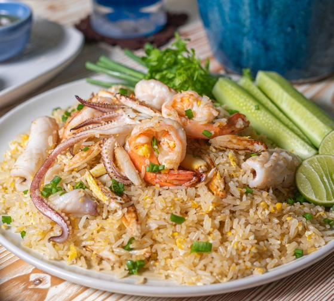

ข้าวผัดรวมมิตร

วัตถุดิบ
- น้ำมันพืช
- หอมใหญ่ซอย 1 ช้อนโต๊ะ
- ไข่เป็ดหรืแไข่ไก่ 1 ฟอง
- กุ้งสด ปลอกเปลือกผ่าหลัง 3 ตัว
- ปลาหมึก หั่นแว่น 1 ตัว
- เนื้อปู 50 กรัม
- ข้าวสวยหุงสุก (พักทิ้งไว้จนเย็นสนิท) 1 ถ้วย
- เกลือป่น 1/4 ช้อนชา
- พริกไทยป่น 1/4 ช้อนชา
- น้ำตาลทราย 1/2 ช้อนโต๊ะ
- ต้นหอมซอย
- มะนาวฝาน 1 ซีก
- แตงกวาหั่น 3 ชิ้น
วิธีการทำข้าวผัดทะเล
- ใส่น้ำมันลงในกระทะนำขึ้นตั้งไฟแรงพอร้อน ใส่หอมใหญ่ลงผัดจนมีกลิ่นหอม
- ใส่กุ้ง,ปลาหมึกและเนื้อปูลงไปผัดจนสุก
- ตอกไข่ใส่ลงไปในกระทะและยีให้ไข่พอแตก ตามด้วยใส่ข้าวสวย เกลือป่น พริกไทยป่น น้ำส้มสายชู และน้ำตาลทราย ผัดจนเข้ากัน และข้าวเป็นเม็ด ชิมรสตามชอบ
- ตักใส่จาน เสิร์ฟพร้อมมะนาวฝาน และแตงกวา